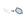

One spine, eighteen subcategories, a live connection graph.
Frahan StonePack is pre-CAM: it turns survey and design intent into fabrication-ready geometry, then hands clean geometry to the machine step. The component catalogue and the connection graph below are auto-generated from source, so they stay current.
01
One spine runs left to right. Each stage is a Grasshopper component family on the Frahan ribbon tab; the [RelatedComponent] edges wire the stages together. The DFN bridge is the key decoupling — joint-set statistics produce a fracture network even when the scan mesh is incomplete, so block packing does not depend on a watertight scan.

| Stage | Input | Output | Subcategories |
|---|---|---|---|
| Ingest | GPR radargrams, point clouds, vector/CAD/raster | clouds, meshes, fracture traces | Ingest, Mesh |
| Discontinuity / fracture | point cloud, GPR B-scan | joint sets, stereonet, fracture planes, block size | Quarry, Fracture, Analysis |
| Reconstruction | point cloud / mesh soup | clean watertight mesh | Mesh |
| DFN | joint-set statistics | fracture-network mesh + bench | Quarry |
| Block packing + cutting | bench + fractures / containers | block sets, guillotine cut plans, recovery | Quarry, 3D Packing, Slab |
| 2D nesting | parts + sheet (with holes) | 0-overlap nested layout | 2D Packing, Surface Packing, Trencadis |
| Masonry assembly | stones / wall target | placed wall, equilibrium certificate, metrics | Masonry, Voussoir |
| Restoration / matching | broken fragments | reassembly poses | EdgeMatch, Kintsugi |
| Fabrication export | cut planes / placements | cut plans, robot targets | Fabricate, Reports, Sculpt |
02
The live 93-edge upstream → downstream graph across all 187 components, grouped and coloured by subcategory. Drag to pan, scroll to zoom, click a node to open its component page. Toggle subcategories to focus a stage.
03
Five managed modules plus native shims and external tools. The Core is Rhino-free, so the algorithms are headless-testable; the GH layer is a thin adapter.
04
All algorithm math lives in Frahan.StonePack.Core with no RhinoCommon dependency, so it is unit-tested headless. The GH layer is a thin adapter.
Monolith components are a facade over standalone primitives, never a black box; both are kept and cross-linked.
Reconstruction, GPR migration, block packing, carving, and recovery ship a default-FALSE Run toggle and run on a background task, so the canvas never freezes.
The heaviest native work (E57 read, discontinuity worker, recon worker, BFF) runs as a separate process over binary IPC, so a native crash never takes Rhino down.
Every component carries an [Algorithm] attribute (title + citation) and [RelatedComponent] edges — these drive the auto-generated catalogue and the connection map on this page.
Recenter geometry before computing, use a scale-relative epsilon, snap booleans through a robust integer kernel. This is the cross-cutting fix that makes site-coordinate (UTM) work reliable.